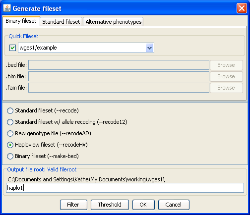

|  |
Other gPLINK optionsReturning to gPLINK, we can extract a smaller dataset from the whole WGAS file, for example, to load it into Haploview. The Data management menu offers a Generate fileset option which brings up this dialog. Here, we select to create a Haploview fileset (a PED and INFO file).Previous | Next |